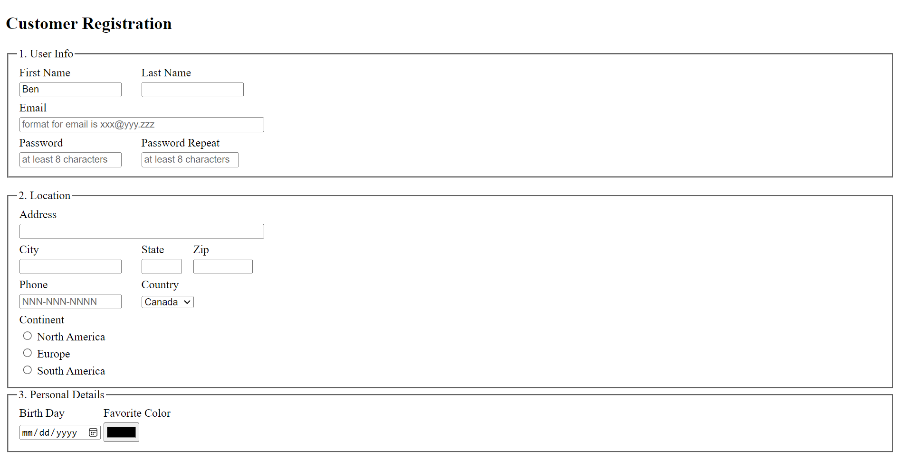
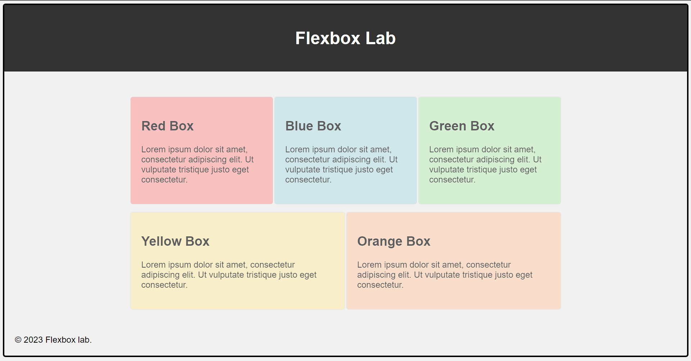

Objective
- To secure a challenging position in my field of study, leveraging my education and skills to contribute to a dynamic organization while continuously learning and growing professionally
Education
- July 2022: Graduated from Luong The Vinh Highschool
- 09 January, 2023 – Present: 0336X WO 03FS Computer Programming, Algonquin College
Skills
- Programming Languages: Java, Javascript, SQL
- Operating Systems: Windows XP, Windows 7, Windows 8, Windows 10, Windows 11, Linux (Ubuntu)
- Database Management: Microsoft Access, Microsoft SQL Server Management Studio
- Software Tools: Eclipse, MySQL Workbench, VMWare Workstation, Word, Outlook
Experience
- Cineplex Cast Member: June 23, 2023 - Present
- Coffee Shop Waiter/Server: May 03, 2022 – November 20 - 2022
- Grocery Store Manager: 2018 – May 02, 2022
Goals
- Aspiring to collaborate on boundary-pushing projects with talented professionals
- Committed to solving complex programming challenges with logical thinking.
Projects
